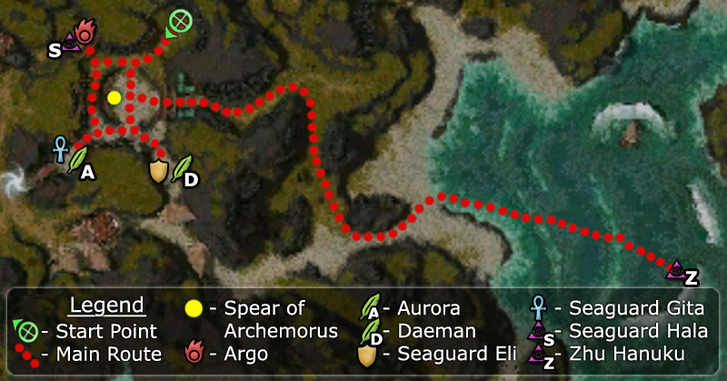

Elite: Dragon Slash
M7
Boreas Seabed
◉ Mission Map

Click to enlarge · Local cache · Wiki
Summary (click to expand)
Win at the Luxon convocation to claim the Spear of Archemorus .
Region: The Jade Sea · Mission: 7 of 13 · Type: Cooperative
✓ Objectives
Triumph in the Convocation and earn the right to use the Spear of Archemorus against Shiro.
- Defeat the three Champions and their Seaguard.
- Retrieve the Spear of Archemorus.
- Defeat Zhu Hanuku using the Spear of Archemorus.
→ Walkthrough
Defeat the three Luxon clans and their champions one by one to earn the right to challenge Zhu Hanuku. Each group has two bosses, and the next will enter the arena as soon as the previous group is killed. The Crab Clan will be your first opponent from the South-East corner. The Serpent Clan seconds from the South-West corner. And last the Turtle Clan from the North-West lead by Argo, a very hard elementalist boss who uses Argo's Cry, a skill stronger than Meteor Shower (interrupts highly recommended). Since they all spawn inside narrow corridors, use its gate as choke points before they spread.
Members of the Luxon teams (bosses are marked in bold):
| Crab Clan | Serpent Clan | Turtle Clan | |
|---|---|---|---|
| Champion | |||
| Members |
Winning the Convocation gives you access to the Spear of Archemorus, an optional and recommended bundle item that can deal a max damage of 1900 at its level five when dropped (see its cumulative power here). Take it and head towards the Kraken boss, avoid aggro while fighting it.
This is a dangerous enemy: its Jade Fury skill deals significant area of effect damage and also has two resurrection skills to bring back the Kraken Spawns. Fortunately, its skills have long activation time, which can be easily interrupted.
★ Bonus
See walkthrough and objectives for bonus details (if any).
◆ Hard Mode
No dedicated Hard Mode section on the wiki — expect tougher foes and adjusted mechanics. See walkthrough notes.
☠ Bosses & Elites
Elite: Barrage
Elite: Broad Head Arrow
Elite: Life Sheath
Elite: Power Leech
Elite: Mind Burn
Elite: None / not listed
✦ Tips & Notes
Skill recommendations
- Interrupts or daze skills to counter Argo and Zhu Hanuku e.g. Broad Head Arrow which can be captured from Daeman in this mission itself.
- A minion master and/or spirit spammer, since minion and spirit deaths charge the spear.
- Frozen Soil can be useful versus the Luxon clans as their bosses carry Resurrection Signet.
Notes
- After Elder Rhea announces the start, the first gate opens when a player is in or enters the central area around the spear.
- You can increase your Luxon Faction cap limit by 7,000 by completing this mission along with Gyala Hatchery and Unwaking Waters. This increase can only be applied once per account.
- Archemorus' Strike can cause damage (and knock down) to the party during the convocation battles, if too many creatures die near the Spear of Archemorus.
- If your party wipes at the end of the third convocation battle, but your foes somehow die anyhow (e.g. due to spirits, minions, and/or degeneration), your party will be resurrected after the mid-mission cinematic. The return to outpost window will still appear.
- The portals to Mount Qinkai and Zos Shivros Channel are blocked.
- Completion of this mission will fill in page #5 of the Shiro's Return storybook.
- After completing this mission, your party will be taken to Zos Shivros Channel.